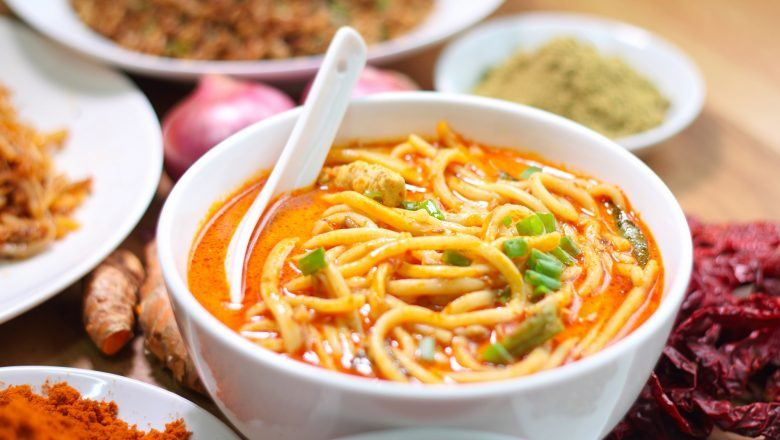

Mie Gomak

Hidangan berbahan dasar mie lidi ini sudah menjadi bagian dari budaya Batak sejak lama. Ukuran mie besar seperti mie Aceh dan seringkali disebut sebagai spaghetti Batak. Hidangan mi yang sering dijajakan sebagai hidangan sarapan ini dimasak dalam banyak variasi.
Bahan & alat:
Bahan:
- 300 g mi lidi
- 6 lembar daun jeruk
- 1200 ml susu rendah lemak
- 2 sdm andaliman, haluskan
- 3 buah tomat, potong-potong
- 3 batang serai, memarkan
- 500 g daging sapi bagian sengkel atau sandung lamur, potong-potong
- 400 ml santan
- 70 g bunga kecombrang, iris
- 3 batang daun bawang, iris halus
- 3 sdm minyak, untuk menumis
Bumbu halus:
- 12 butir bawang merah
- 5 buah cabai merah
- 3 cm kunyit
- 1 sdt garam
- 8 buah cabai rawit merah
- 3 siung bawang putih
- 2 cm jahe
Langkah memasak:
- Kuah mie: Panaskan minyak, tumis bumbu halus, serai, dan daun jeruk hingga harum. Masukkan daging, masak sambil diaduk hingga berubah warna.
- Tuang susu rendah lemak, masak hingga daging empuk. Masukkan santan, kecombrang, mendidih. Masukkan santan, kecombrang, dan andaliman. Masak hingga mendidih.
- Masukkan daun bawang dan tomat. Aduk rata, angkat.
- Tata mi lidi di dalam mangkuk, siram dengan kuah. Sajikan.